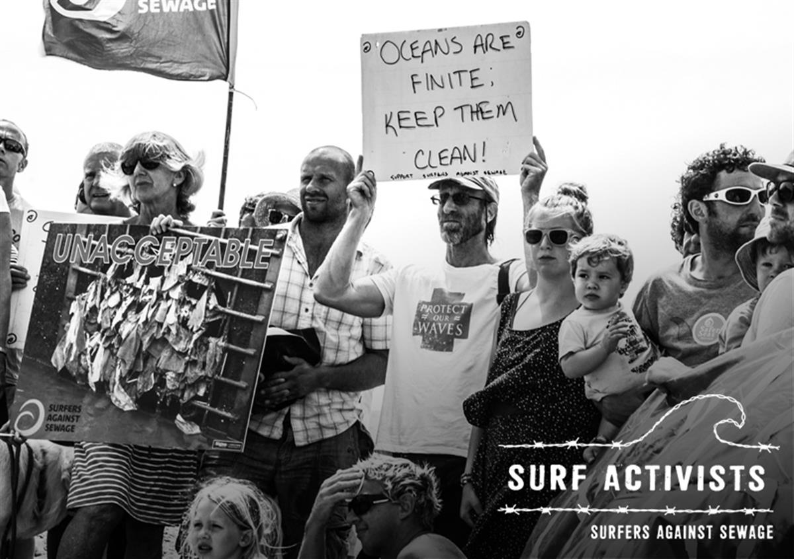

Surfers Against Sewage believes that all surfers should take stewardship for our surfing environment and carry out actions to preserve and improve the places we live, surf and love. We can all be Surf Activists.
The Surf Activists website provides surfers with the tools needed to make positive change at local beaches and protect Site of Special Surfing Interest (SSSI).
Surfers Against Sewage believes that waves and surf spots deserve to be seen as part of our natural heritage and should be afforded greater recognition and protection through political debate and legislation. The marine conservation charity is campaigning hard to raise the public awareness of these natural resources, the environmental, physical and geological factors that create waves and how they are integral to coastal ecosystems and can help support thriving, sustainable and economically successful coastal communities around the UK.
